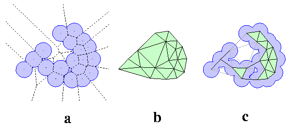
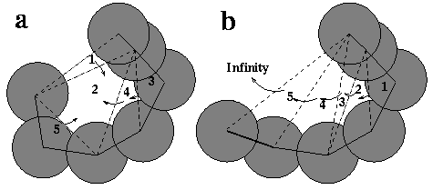

CASTp is based on theorectical and algorithmic results of Computational Geometry. It has many advantages: 1) pockets and cavities are identified analytically, 2) the boundary between the bulk solvent and the pocket is defined precisely, 3) all calculated parameters are rotationally invariant, and do not involve discretization and they make no use of dot surface or grid points.
The following contains excerpts from Liang et al, 1998.
The basic ingredients of Computational Geometry applied in CASTp are: Delaunay triangulation, alpha shape, and discrete flow (Edelsbrunner & Mucke 1994; Edelsbrunner 1995; Facello 1995; Edelsbrunner & Shah 1996; Edelsbrunner et al, 1998). Consider a highly simplified hypothetical model, a two dimensional molecule formed by atom disks, all of the same radius (Figure 1a). If nails are figuratively hammered into the plane at each atom center, and a rubber band is stretched around the entire collection of nails, the band encloses a convex hull of the molecule, containing all atom centers within. The convex hull of the disk centers in Figure 1a is the shape enclosed by the outer boundary of the polygon in Figure 1b (shaded area). It can be triangulated, i.e., tessellated with triangles so that there is neither a missing piece, nor overlap, of the triangles. Triangulation of a convex hull is shown in Figure 1b, where triangles tile all of the shaded convex hull area. This particular triangulation, called the Delaunay triangulation, is especially useful because it is mathematically equivalent to another geomectric construct, the Voronoi diagram (the pattern formed by all dashed lines in Figure 1a).

The Voronoi diagram is formed by the collection of Voronoi cells. For the hypothetical molecule in Figure 1a, Voronoi cells include the convex polygons bounded all around by dashed lines, as well as the polygons with edges defined by dashed lines, but extending to infinity. Each cell contains on atom, and those extending to infinity contain boundary atoms of the convex hull. A Voronoi cell consists of the space around one atom so that the distance of every spatial point in the cell to its atom is less than or equal to the distance to any other atom of the molecule. The Delaunay triangulation can be mapped from the Voronoi diagram directly. Across every Voronoi edge seperating two neighboring Voronoi cells, a line segment connecting the corresponding two atom centers is placed. For every Voronoi vertex where three Voronoi cells intersect, a triangle who's vertices are the three atom centers is placed. In this way, the full Delaunay triangulation is obtained by mapping from the Voronoi diagram. That is, both the Delaunay triangulation and the Voronoi diagram contain equivalent information.
To obtain the alpha shape, or dual complex, the mapping process is repeated, except that the Voronoi edges and vertices completely outside the molecule are omitted. Figure 1c shows the dual complex for the 2-d molecule in Figure 1a. The edges of the Delaunay triangulation corresponding to the omitted Voronoi edges are the dotted edges in Figure 1c; a triangle with one or more dotted edges is designated an "empty" triangle (though not all empty triangles have dotted edges). The dual complex and the Delaunay triangulation are two key constructs that are reich in geometric information; from them the area and volume of the molecule, and of the interior inaccessible cavities, can be measured. As an example, a void at the bottom center in the dual complex (Figure 1c) is easily identified as a collection of empty triangles (3 in this case) for which the enclosing polygon has solid edges. There is a one-to-one correspondence between such a void in the dual complex, and an inaccessible cavity in the molecule. The actual size of the molecular cavity can be obtained by subtracting from the sum of the areas of the triangles, the fractions of the atom disks contained within the triangle. Details for computing cavity area and volume are in (Edelsbrunner et al, 1995; Liang et al, 1998b).
For identifying and measuring pockets, the discrete flow method is employed. For the 2-D model, discrete flow is defined only for empty triangles, that is, those Delaunay triangles that are not part of the dual complex. An obtuse empty triangle "flows" to its neighboring triangle, whereas an acute empty triangle is a sink that collects flow from neighboring empty triangles. Figure 2a shows a pocket formed by five empty Delaunay triangles. Obtuse triangles 1,4, and 5 flow to the sink, triangle 2. Triangle 3 is also obtuse; it flows to triangle 4, and continues to flow to triangle 2. All flows are stored, and empty triangles are later merged when they share dotted edges (dual, non-complex edges). Ultimately, the pocket is delineated as a collection of empty triangles. The actual size of the molecular pocket is computed by subtracting the fractions of atom disks contained within each empty triangle. The 2-D mouth is the dotted edge on the boundary of the pocket (upper edge of triangle 1, in this case), minus the two radii of the atoms connected by the edge. The type of surface depression not identified as a pocket is illustrated in Figure 2b; it is one formed by five obtuse triangles that flow sequentially from 1 to 5 to the outside, or infinity.

All the features of the 2-D description have more complex 3-D counterparts. The convex hull in three dimensions is a convex polytope instead of a polygon, and its Delaunay triangulation is a tessellation of the polytope with tetrahedra. When atoms have different radii, the weighted Delaunay triangulation is required, and the corresponding weighted Voronoi cells are also different (Edelsbrunner, 1995).